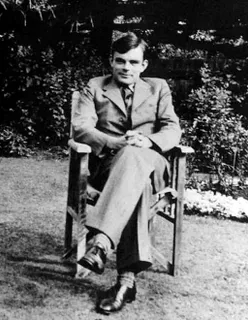
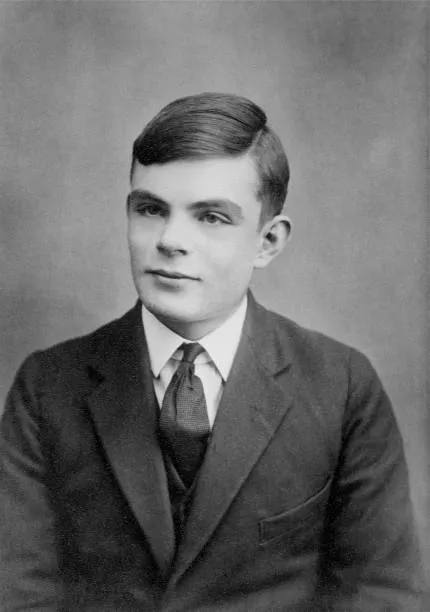
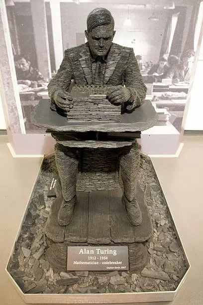

Alan Turing fue un brillante matemático británico que desempeñó un papel destacado en el desciframiento de las claves nazis durante la Segunda Guerra Mundial. En su artículo fundamental de 1936, demostró que no puede existir ningún método algorítmico universal para determinar la verdad en matemáticas y que éstas siempre contendrán proposiciones indecidibles. Su trabajo está ampliamente reconocido como investigación fundacional de la informática y la inteligencia artificial.
Alan Mathison Turing nació el 23 de junio de 1912, hijo de Julius Mathison Turing, funcionario en la India, y de (Ethel) Sara Turing, hija de Edward Waller Stoney, ingeniero jefe de la Madras and Southern Mahratta Railway.
primeros años de Alan transcurrieron con su hermano John, que vivía con la familia Ward en St Leonards-on-Sea (cerca de Hastings); sus padres venían de visita desde la India cuando podían. Alan estudió en la Hazelhurst School y luego en la Sherborne School. Obtuvo una beca abierta en Matemáticas en el King's College y se matriculó en 1931.
Se graduó en 1934 con sobresaliente y obtuvo una beca en 1935. En 1936 terminó el borrador de su artículo "On Computable Numbers". Alan regresó a King's en 1938 con su doctorado. Al estallar la guerra se incorporó a la Escuela Gubernamental de Códigos y Cifras de Bletchley Park, Buckinghamshire, donde formó parte del equipo que descifró la máquina Enigma. En 1946 recibió la Orden del Imperio Británico por su trabajo.
Después de la guerra, Alan trabajó primero en el Laboratorio Nacional de Física y después en la Universidad de Manchester en el desarrollo del ordenador a partir de sus primeras ideas sobre una "máquina de Turing", a principios de la década de 1930. En 1951 fue elegido miembro de la Royal Society. A principios de los años 50 desarrolló una teoría de la morfogénesis, una teoría matemática del crecimiento orgánico. El trabajo quedó incompleto cuando murió, el 8 de junio de 1954, en su casa de Wilmslow, Cheshire.
Durante la Segunda Guerra Mundial, Turing fue uno de los principales participantes en el descifrado de códigos bélicos, en particular el de los cifrados alemanes. Trabajó en Bletchley Park, la estación de guerra del GCCS, donde realizó cinco importantes avances en el campo del criptoanálisis, entre ellos la especificación de la bomba, un dispositivo electromecánico utilizado para ayudar a descifrar las señales cifradas alemanas Enigma.
Las contribuciones de Turing al proceso de descifrado de códigos no se detuvieron ahí: También escribió dos artículos sobre enfoques matemáticos para descifrar códigos, que se convirtieron en activos tan importantes para la Code and Cypher School (más tarde conocida como Government Communications Headquarters) que el GCHQ esperó hasta abril de 2012 para entregarlos a los Archivos Nacionales del Reino Unido.
Turing se trasladó a Londres a mediados de la década de 1940 y empezó a trabajar para el National Physical Laboratory. Entre sus contribuciones más notables, Turing dirigió el diseño del Motor de Computación Automática (ACE, por sus siglas en inglés) y, en última instancia, creó un innovador anteproyecto de ordenador de programa almacenado. Aunque nunca se llegó a construir una versión completa del ACE, su concepto ha sido utilizado como modelo por empresas tecnológicas de todo el mundo durante varios años, influyendo en el diseño del DEUCE inglés y el Bendix G-15 estadounidense (considerado por muchos en la industria tecnológica como el primer ordenador personal del mundo), entre otros modelos de ordenador.
A finales de la década de 1940, Turing ocupó altos cargos en el departamento de matemáticas y, más tarde, en el laboratorio de informática de la Universidad de Manchester. Abordó por primera vez la cuestión de la inteligencia artificial en su artículo de 1950, "Computing machinery and intelligence", y propuso un experimento conocido como el "Test de Turing", un esfuerzo por crear un estándar de diseño de inteligencia para la industria tecnológica. En las últimas décadas, la prueba ha influido significativamente en los debates sobre inteligencia artificial.
Tras la guerra, Turing siguió desarrollando sus ideas sobre la informática. Su trabajo condujo a la construcción de los primeros verdaderos ordenadores, pero su trabajo más famoso se produjo en 1950, cuando publicó un artículo en el que se preguntaba "¿pueden pensar las máquinas?".
Detalló un procedimiento, más tarde conocido como la prueba de Turing, para determinar si una máquina podía imitar la conversación humana. Se convirtió en una parte fundacional del campo de la inteligencia artificial, aunque muchos investigadores modernos cuestionan su utilidad.
Turing también se interesó por la biología y en 1952 publicó un artículo en el que explicaba detalladamente cómo se desarrollan las formas y patrones biológicos.
Ese mismo año fue condenado por mantener relaciones románticas con un hombre, lo cual era ilegal en aquella época. Turing tuvo que elegir entre ir a la cárcel o someterse a un tratamiento hormonal. Eligió esta última opción.
Turing fue hallado muerto el 8 de junio de 1954, como consecuencia de una intoxicación por cianuro. Su muerte fue declarada suicidio. En 2013, Turing fue indultado a título póstumo por su condena por "indecencia grave" tras una campaña para reconocerlo como héroe nacional. El 15 de julio de 2019, fue anunciado como el rostro del nuevo billete de 50 libras, que entrará en circulación en 2021 el 23 de junio, fecha de su nacimiento.
Poco después de la Segunda Guerra Mundial, Turing fue condecorado con la Orden del Imperio Británico por su trabajo. Con motivo de su 86 cumpleaños, Andrew Hodges, biógrafo de Turing, descubrió una placa azul oficial del Patrimonio Inglés en la casa de su infancia.
En junio de 2007 se inauguró una estatua a tamaño natural de Turing en Bletchley Park, en Buckinghamshire (Inglaterra). El 28 de octubre de 2004 se inauguró una estatua de bronce de Turing en la Universidad de Surrey, con motivo del 50 aniversario de su muerte. Además, el Princeton University Alumni Weekly nombró a Turing el segundo antiguo alumno más importante de la historia de la universidad (James Madison ocupó el primer puesto).
Turing fue homenajeado de otras formas, sobre todo en la ciudad de Manchester, donde trabajó hacia el final de su vida. En 1999, la revista Time le nombró una de sus "100 personas más importantes del siglo XX", afirmando: "El hecho es que todo el que pulsa un teclado, abre una hoja de cálculo o un programa de tratamiento de textos, está trabajando en una encarnación de una máquina de Turing". Turing también ocupó el puesto 21 en la encuesta nacional de la BBC sobre los "100 británicos más grandes" en 2002. En general, Turing ha sido reconocido por su impacto en la informática, y muchos lo consideran el "fundador" de este campo.
"Es gracias a hombres y mujeres totalmente comprometidos en la lucha contra el fascismo, personas como Alan Turing, que los horrores del Holocausto y de la guerra total forman parte de la historia de Europa y no del presente de Europa. Así que en nombre del gobierno británico y de todos aquellos que viven en libertad gracias al trabajo de Alan me siento muy orgulloso de decir: lo sentimos, te merecías algo mucho mejor". - Gordon Brown, Ex-Primer Ministro Británico.
En 2013, la reina Isabel II concedió a Turing, a título póstumo, un raro indulto real casi 60 años después de que se suicidara.
En julio de 2019, el Banco de Inglaterra anunció que Turing aparecería en el nuevo billete de 50 libras del Reino Unido, junto con imágenes de su obra. El famoso científico fue elegido de una lista de casi 1.000 candidatos propuestos por el público en general, entre ellos el físico teórico Stephen Hawking y la matemática Ada Lovelace.